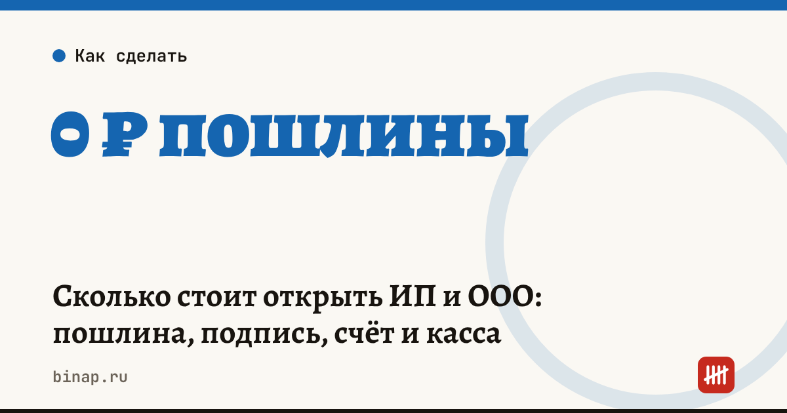

Сколько стоит открыть ИП и ООО: пошлина, подпись, счёт и касса

Открыть ИП или ООО можно почти без обязательных расходов: госпошлину не платят, если подать документы в электронном виде, через МФЦ или нотариуса. Деньги понадобятся на другое — счёт, кассу, подпись, — и эти расходы лучше посчитать заранее.
Коротко
- Госпошлину за регистрацию ИП и ООО не платят при подаче через сайт ФНС, Госуслуги, МФЦ или нотариуса — так с 1 января 2019 года (закон № 234-ФЗ). Платить нужно только при подаче бумажных документов лично в налоговую или почтой.
- Нотариус пошлину за вас не платит, но берёт плату за свои услуги.
- Печать не обязательна ни для ИП, ни для ООО.
- Основные расходы на старте — обслуживание расчётного счёта, онлайн-касса (если она нужна), электронная подпись и бухгалтерия.
- Многие банки регистрируют бизнес бесплатно и сразу открывают счёт. По данным Клерка, ВТБ с 1 ноября 2026 года открывает первый счёт после онлайн-регистрации ИП или ООО с единственным участником дистанционно, по биометрии.
Сроки, изменения и разборы для ИП и самозанятых — каждое утро в Telegram и MAX. Подпишитесь, чтобы не пропустить.
Из чего складываются расходы на старте
| Статья | ИП | ООО | Комментарий |
|---|---|---|---|
| Госпошлина за регистрацию | 0 ₽ онлайн, через МФЦ или нотариуса | 0 ₽ онлайн, через МФЦ или нотариуса | платится только при бумажной подаче в налоговую |
| Услуги нотариуса | по тарифу нотариуса | по тарифу нотариуса | если подаёте через него |
| Устав | не нужен | можно взять типовой бесплатно | типовой устав ООО |
| Юридический адрес | адрес прописки | свой или арендованный | для ООО аренда адреса — отдельный расход |
| Электронная подпись | бесплатно в УЦ ФНС, носитель — за свой счёт | так же, на директора | нужна для отчётности и ЭДО |
| Расчётный счёт | по тарифу банка | по тарифу банка | закон не требует счёта для ИП, но без него сложно работать с компаниями |
| Онлайн-касса | если принимаете оплату от физлиц | так же | не нужна при оплате только от компаний и ИП по счёту |
| Печать | не обязательна | не обязательна | — |
Размеры пошлины при бумажной подаче сверяйте в ст. 333.33 Налогового кодекса на дату подачи — проще её вообще не платить, подав документы онлайн.
Как не переплатить за «бесплатную» регистрацию
Бесплатная регистрация в банке — это способ привести клиента на расчётно-кассовое обслуживание. Сама регистрация действительно ничего не стоит, но платить вы будете за счёт. Поэтому перед выбором банка выпишите по каждому из 2–3 вариантов:
- Стоимость обслуживания после льготного периода.
- Лимит бесплатных переводов физлицам и себе на карту и цену сверх лимита.
- Комиссию за снятие наличных.
- Ставку эквайринга, если будете принимать карты.
- Условия для ООО с несколькими учредителями: у части банков онлайн-сценарий рассчитан только на ООО с одним участником.
Как сравнить тарифы на своих оборотах — в статье где открыть счёт ИП.
Расчёт редакции: тариф 990 ₽ в месяц против 0 ₽ с комиссией 1% за переводы физлицам. При переводах себе на карту 50 000 ₽ в месяц второй тариф обходится в 500 ₽, а при 150 000 ₽ — уже в 1 500 ₽ и становится дороже первого. Считайте на своих оборотах.
Пошагово
- Выберите форму. ИП проще и дешевле в учёте, ООО отвечает по долгам своим имуществом и подходит для бизнеса с партнёрами.
- Выберите налоговый режим до подачи заявления. Уведомление об УСН подают вместе с документами или в течение 30 дней после регистрации, иначе до конца года будет общая система с НДС.
- Подайте документы онлайн, через МФЦ, нотариуса или банк — без пошлины. Пошагово для ИП — в статье как открыть ИП онлайн.
- Откройте счёт после сравнения тарифов.
- Подключите кассу, если будете принимать оплату от физлиц, и посчитайте взносы ИП в калькуляторе взносов.
Зарегистрировать ИП или ООО и сразу открыть расчётный счёт онлайн: ссылка
Частые вопросы
Сколько стоит зарегистрировать ИП в 2026 году? При подаче онлайн, через МФЦ или нотариуса госпошлину не платят. Платить её нужно только при подаче бумажных документов в налоговую.
Нужна ли печать ИП или ООО? Нет, печать не обязательна.
Нужна ли электронная подпись для регистрации? Для подачи через сайт ФНС — да. В МФЦ, у нотариуса и через банк своя подпись не нужна: документы подписывает нотариус или банк, в МФЦ подают бумажные документы без пошлины.